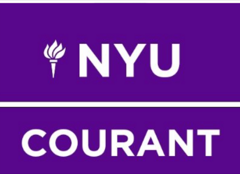
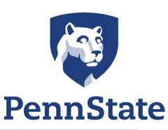

About Kanishka Chandrakar
I’m Kanishka Chandrakar, a computer science graduate student at NYU Courant specialising in AI and machine learning, with a software engineering degree from Penn State.
I build production software and applied ML systems: an iOS app used by thousands of people, language pipelines over hundreds of thousands of documents. Open to full time and research roles from May 2027.

Education

MS in Computer Science (AI)

BS in Computer Science
Technical skills
I work across the whole of a project, from the interface someone touches to the model and the data underneath it. Python, Swift, C, PyTorch and the usual web stack: enough range to take an idea from a sketch to something real users run.
Personal attributes
Three years of teaching taught me to explain hard ideas simply and to debug someone else’s reasoning, not only their code. I reach for the plain solution first and leave something the next person can read.